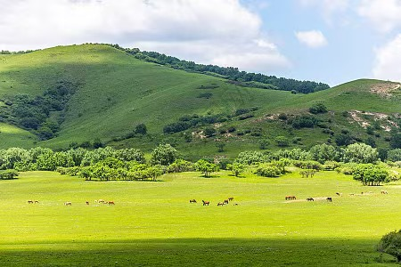
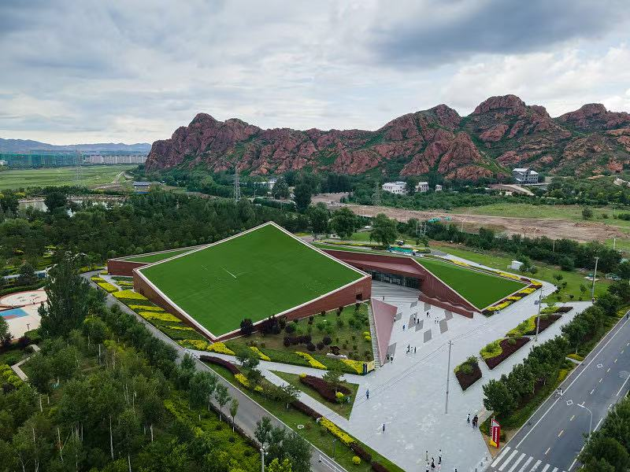
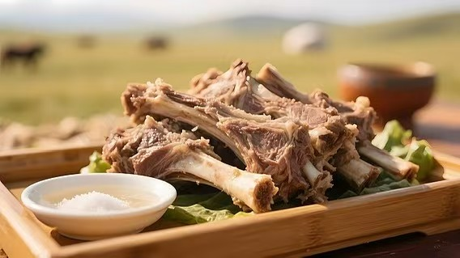
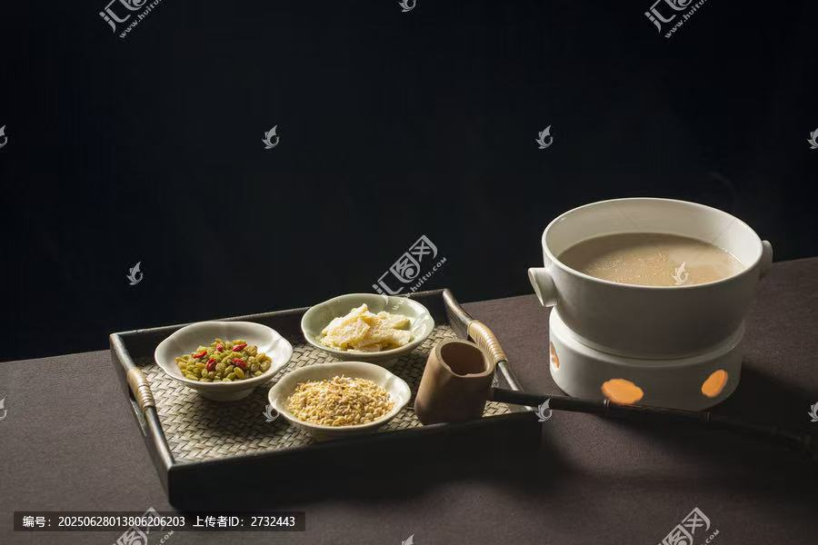
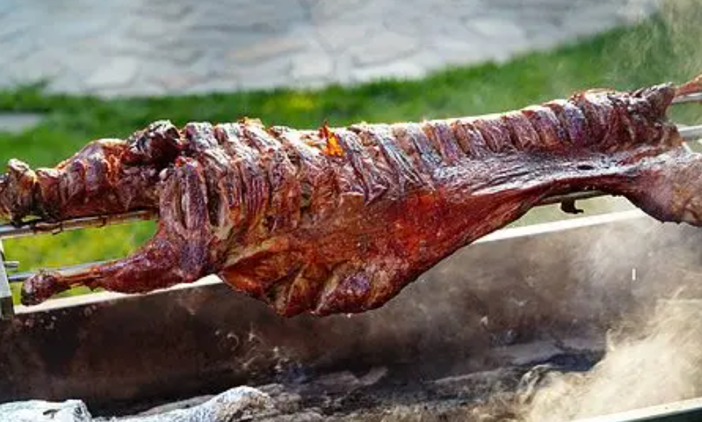
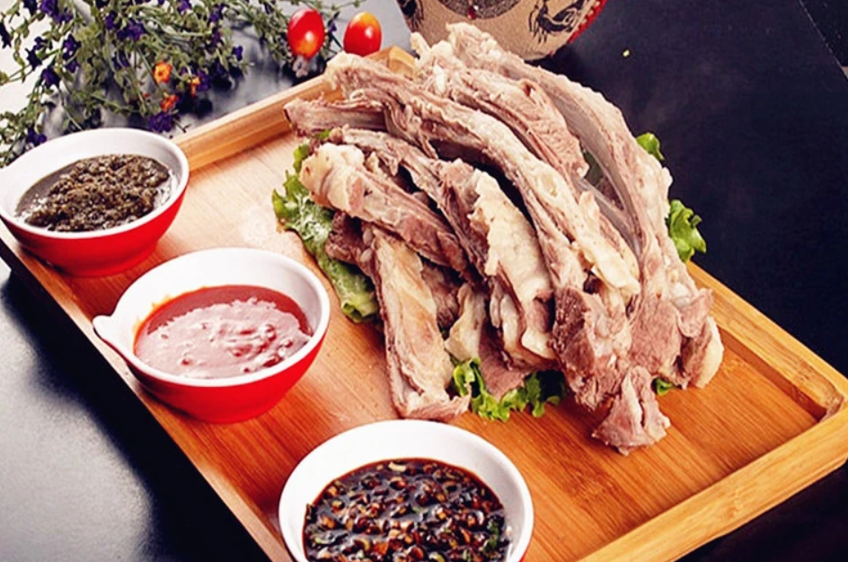
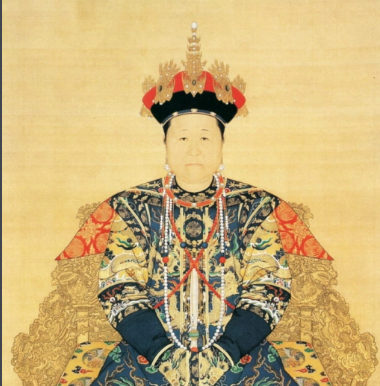
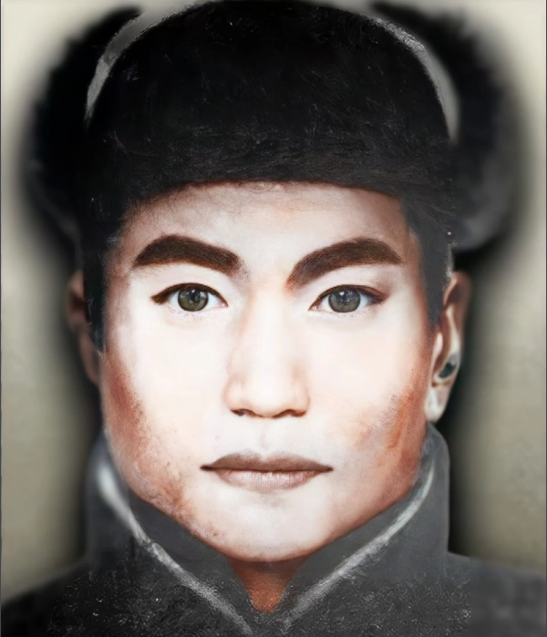

| 赤峰热门景点 | |
|---|---|
| 1乌兰布统草原 | 5A景区 |
| 2阿斯哈图石林 | 地质公园 |
| 3达里诺尔湖 | 保护区 |
关于赤峰 / About Chifeng
赤峰市，内蒙古自治区下辖地级市，位于内蒙古东南部，蒙冀辽三省交汇处。赤峰因城区东北部赭红色山峰而得名，是中华文明的重要发祥地之一，拥有近万年的红山文化历史。这里草原辽阔、大漠壮美、石林奇绝，是镶嵌在祖国北疆的一颗璀璨明珠。
查看更多
草原风情
草原美食


蒙古族饮食文化源远流长，以肉食和奶食为主，追求食材本真之味。烤全羊是招待贵宾的至高礼节，手把肉诠释了草原儿女的豪迈本色，一碗热腾腾的蒙古奶茶温暖着每一个清晨，奶豆腐与风干牛肉则是游牧智慧的味觉结晶。每一道美食都承载着草原上千年不变的热情与真诚。
查看详情 →历史名人


赤峰是蒙古族文化的重要传承地，草原上涌现出众多影响历史进程的杰出人物。成吉思汗统一蒙古各部开创帝国伟业，孝庄文皇后以非凡智慧辅佐三代帝王，僧格林沁率蒙古骑兵抗击外侮扬我国威，嘎达梅林用生命捍卫草原牧人的家园。他们是从草原走出的英雄儿女，在中华历史长卷上留下了浓墨重彩的篇章。
查看详情 →蒙古族文化


蒙古族文化是草原上绽放的璀璨瑰宝，凝聚着游牧民族千年的智慧与信仰。盛大的那达慕大会展现草原儿女的勇武豪情，悠扬的马头琴诉说着古老的草原传说，精巧的蒙古包诠释了天人合一的居住哲学，华丽的蒙古族服饰与刺绣承载着民族审美，庄严的祭敖包仪式传递着对天地自然的敬畏。每一项文化遗产都是蒙古族先民留给世界的珍贵礼物。
查看详情 →文旅锦囊
为您精心准备的赤峰旅行必备指南，让旅途更加轻松惬意
更多赤峰推荐
草原之外，赤峰还有更多值得探索的宝藏
💡 旅游贴士
🕐 最佳季节：6-10月
🌡️ 夏季均温：20°C
🧥 早晚温差大备外套
📸 日出日落最出片